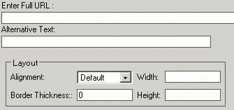

Nach dem Drücken der Schaltfläche "Bild einfügen" wird von KTML ein Fenster angezeigt, das Ihnen hilft, ein vorhandenes Bild auszuwählen, oder ein Bild hochzuladen.
Navigation in dem Dateifeld
Das Fenster besitzt einen Dateibrowserbereich und einen Konfigurationsbereich.
Es werden vom Bildbrowser nur folgende Dateien unterstützt: bmp, gif, jpeg, jpg, png, swf.
Der Dateibrowser hat folgende Optionsbereiche:
- Das linke Panel mit der Ordnerstruktur, folgende Optionen stehen zur
Auswahl: Ordner erstellen, Ordner löschen.

- Das rechte Pane zeigt den Inhalt des ausgewählten Ordners an, folgende
Optionen stehen zur Auswahl: Bild hochladen, Bild löschen.

Der Dateibrowser zeigt nur den Inhalt des "Uploadordners", Sie können beim Einrichten des KTML Editors den Pfad dieses Ordners angeben.
Sie können im Dateibrowser auch die einzelnen Ordner (falls erstellt)
durchsuchen, um einen Ordner einzusehen brauchen Sie nur doppelt auf das
Ordnersymbol klicken, um den Ordner aufzurufen, und Unterordner anzuzeigen.
Im rechten Panel werden die Unterordner und die Bilder mit Namen und einer
Voransicht angezeigt. Um ein Bild auszuwählen, brauchen Sie nur die
Voransicht oder den Namen anklicken.
Die Bildfunktionen
Nach dem Markieren des Bildes wird im unteren Panel dessen Eigenschaften
angezeigt. Die Eigenschaften können im unteren Panel geändert
werden.

Für das gewählte Bild stehen folgende Optionen zur verfügung:
- Ganze URL – die Alternative zum Dateibrowser ist das Eingabefeld für die ganze URL des Bildes. Es wird automatisch beim Auswählen des Bildes angezeigt.Sie können natürlich auch ein externes Bild von einem anderen Server in dieser URL eingeben, beachten Sie jedoch, dass KTML keinen Einfluss auf externe Bilder hat.
- Alternativer Text – Dieser Text wird bei Browsern, die keine Bildunterstützung haben, angezeigt. Bei den meisten Browsern wird der Text auch als Popup-Text über dem Bild angezeigt.
- Ausrichtung – spezifiziert die allgemenie Position des Bildes relativ zu den anderen Objekten im Fenster. Die wählbaren Optionen bestehen aus: Vorgegeben, Links, Rechts, Oben, Mitte, Unten; eine genauere Positionierung des Bildes können Sie mit Tabellen erreichen.
- Rahmenstärke – wählen Sie einen Wert in Pixel, um einen Rahmen um das Bild zu ziehen. Der vorgegenbene Wert ist "0" das heißt, daß kein Rahmen angezeigt wird.
- Breite & Höhe – Die Dimensionen des Bildes. Um die Orginalgröße des Bildes beizubehalten, lassen Sie die Felder auf den vorgegebenen Wert. Sie können das Bild auch im Editor verändern, einfach das Bild markieren und mit der Maus ziehen. Es ist jedoch empfohlen, das Bild zuerst in der richtigen Größe auf den Server zu laden, ansonsten können kleine Bilder zu einer unnötig langen Ladezeit führen.
Diese Eigenschaften können auch später im Eigenschaftsfeld geändert
werden.
Notiz Sie können das Bild auch vergrößern,
es wird aber die Bildqualität darunter leiden. Auch hier ist empfohlen,
das Bild in dieser Größe auf den Server zu laden.
Um das Bild einzufügen brauchen Sie nur OK zu drücken.
Einen Neuen Ordner anlegen
Sie können, um die Bilder besser zu organisieren, auch neue Ordner
anlegen. Klicken Sie einfach auf den "Ordner erstellen"-Button.
Der neue Ordner wird automatisch im Ordnerverseichnis (links) angezeigt.
Ordner löschen
Sie können bestehende Ordner auch löschen, wenn Sie dies tun wird
ein seperates Fenster angezeigt. Vorsicht: der Inhalt des
Ordners wird dabei unwideruflich gelöscht.